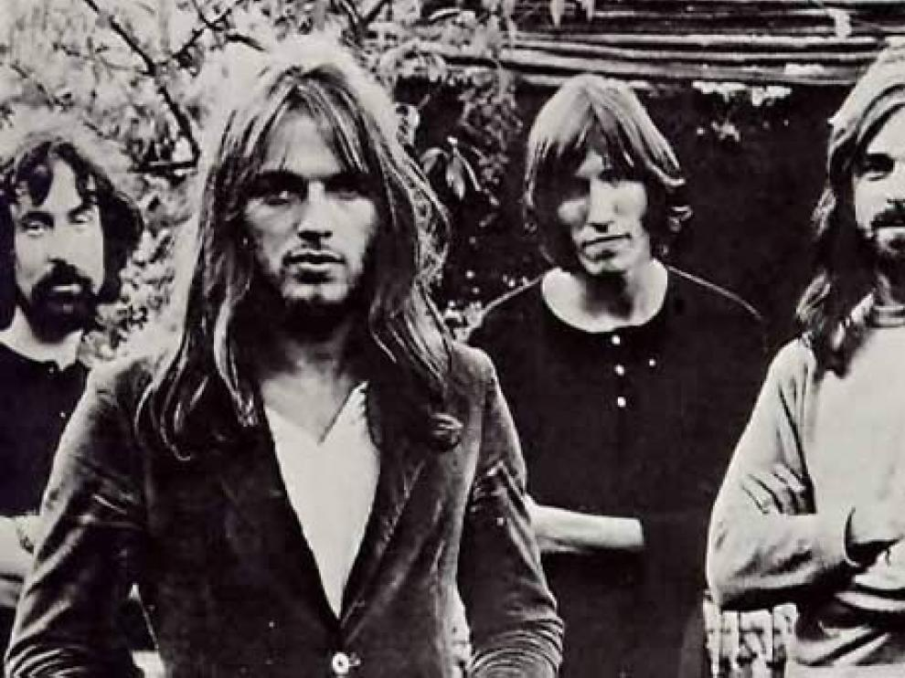
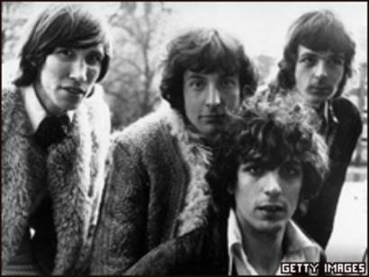
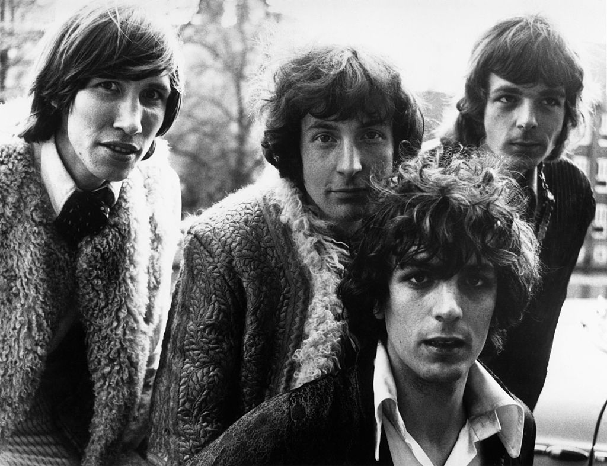

La década de los años 1960 ha sido de las más significativas para la historia de la música, desde para el Rock en general hasta para cualquier género. Fueron demasiados grandes que nacieron y se dieron a conocer en estos 10 años que lo cambiaron todo, y hoy en día siguen sonando tan bien como entonces, incluso mejor. Fueron dioses musicales, de los que cuesta que volvamos a ver, y entre ellos en una posición muy prestigiosa se encuentra Pink Floyd.
Historia de PINK FLOYD
Esencial del Rock de los 70
Pocas agrupaciones han sido tan grandes como Pink Floyd. En su historia, cambiaron la música, y crearon nuevos estiloss, además de dar un nuevo significado a la ópera rock, componiendo canciones y discos completos como relatos de vida, y con letras y música profunda, llena de emoción, durante sus casi 50 años de historia.



Durante casi 50 años, Pink Floyd ha revolucionado la música, y es que Pink Floyd es mucho más que una agrupación de rock progresivo, rock psicodélico, rock sinfónico o espacial. La agrupación de Waters, Gilmour, Mason y Wright (y Barrett) se movió por muchos géneros, y creó o modificó algunos otros, pero en general, su música fue y es grandiosa; cada uno de sus discos se convirtió en una obra maestra del más puro arte, y son un icono cultural en todo el mundo.
Podríamos dividir, sin ser completamente justos, la historia de Pink Floyd en tres eras: la más psicodélica y espacial, la más sinfónica y la más progresiva, con muchos elementos de Blues. Personalmente, a mi me gusta catalogarlas de otra forma, dependiendo de quién marcó el estilo de la época, y cómo se notó su influencia durante todos los discos que abarcó. Todos los integrantes de Pink Floyd marcaron un antes y un después en la agrupación, y en la música, pero sus tres líderes, marcaron las bases de la banda durante tres temporadas.
La era y el Legado de Barrett

Como suele suceder, Pink Floyd nació a raíz de varios intentos musicales de sus integrantes en varias agrupaciones. Todo comenzó en el año 1964 con una agrupación llamada "Sigma 6", pero no fue sino hasta se formó la agrupación Tea Set que se juntaron Roger Waters, Nick Mason, Richard Wright y Syd Barrett, y ese nombre se mantuvo en la banda por mucho tiempo, hasta que por el simple hecho de encontrarse con una agrupación más vieja que llevaba el mismo nombre, pasaron a llamarse The Pink Floyd Sound.
Barrett fue el primer gran líder de Pink Floyd (que poco tiempo después pasaría a llamarse simplemente así), y su estilo estaba marcado por su gusto en The Beatles y del género R&B. El estilo y sonido de Syd Barrett está muy marcado en el primero disco de Pink Floyd, llamado The Piper at the Gates of Down; canciones como Interstellar Overdrive y Arnold Layne o The Scarecrow son sinónimo de Barrett.
La primera era de Pink Floyd estuvo increíblemente marcada por el rock psicodélico y espacial, y esto es en gran parte gracias al primer y perturbado líder de la banda. Perturbado, porque Barrett no duró mucho como parte de la agrupación; a inicios del año 1968 su estado mental era tan grave, gracias al estrés y al consumo de drogas como LSD, que el resto del grupo decidió llamar a un amigo de su líder, llamado David Gilmour, como guitarrista invitado para conciertos, que ayudara a Barrett con voces y guitarra cuando a este le dieran bloqueos mentales (que eran cada vez más comunes entonces).
Pero no funcionó, y en abril de 1968 decidieron retirar a Barrett de la banda, por lo que el gran Syd estuvo solamente para un disco y medio de Pink Floyd, aunque su legado y esencia continuó presente en la banda por muchos discos más. Aún sin Barrett, su estilo y legado marcó a la banda por 7 discos.
El sonido psicodélico de Pink Floyd no murió con la salida de Barrett; aunque es cierto que la banda cambió su estilo en la siguiente era, los primeros 6 (o 7) discos se mantuvieron fieles al estilo psicodélico, espacial y sobre todo experimental, y es por el interés de Gilmour y Waters (principales compositores en la banda) en siempre buscar nuevos sonidos, que cambió tanto Pink Floyd en su historia, y llegaron discos como el A Saucerful of Secrets, el Ummagumma, Atom Heart Mother, y un disco clave llamado Meddle
De este último se rescata el homenaje a sus primeros discos con la portada siendo imágenes superpuestas que forman una figura abstracta, además un dato cusrioso es que el título de este disco viene de la palabra "middle" que significa "medio" en inglés y representa la mitad de la carrera de Pink Floyd marcando el paso de la psicodelia la experimentación, siendo un antes y un después
Una canción que aunque, no es compuesta por Syd Barrett, si toma mucha de su influencia, es Echoes, pieza clave del álbum Meddle y que da un largo y tranquilo final al disco.
Después de esta era no quiere decir que Pink Floyd no haya continuado su legado con música psicodélica, pero la siguiente época vendría muy marcada de forma personal e íntima de uno de sus integrantes, que dejó libre su lado más artístico, y Floyd pasó de ser una agrupación que podías intentar encasillar en uno o dos estilos musicales, o arte en su forma más pura, una ópera, un relato contado con música, con sentimiento, emoción, e historias trágicas, llenas de melodías tristes, alegres, con ira, con fuerza.
En el año 1973 comenzó el "lado oscuro de Pink Floyd", con uno de los discos más conocidos en la historia de la música, y que marcó un antes y un después en el legado de la banda.
La era Waters

Roger Waters mostró su lado más artístico y también oscuro a partir del año 1973 y el mítico disco The Dark Side of the Moon. Mientras que Gilmour se convertía en el vocalista principal de la banda, Waters se dedicaba a hacer evolucionar el sonido de la agrupación, convertirlo en algo difícil de clasificar, en una orquesta, abrió las puertas al rock sinfónico y empezó a componer óperas, con continuidad, que narraban historias maravillosas, impactantes y sobre todo muy personales, cosa que veremos en los dos últimos discos con Waters en la agrupación.
The Dark Side of the Moon fue un éxito mundial, que llevó a la banda a ser reconocida en todo el planeta y ganarse su tan merecido lugar en la historia (hasta entonces, su éxito en Europa era innegable, pero no en los Estados Unidos). Puede que Money sea una de las canciones más exitosas y conocidas en la historia del Rock, y sin duda el gran sencillo del álbum, pero todo el disco es una obra de arte, narrando o intentando plasmar las expresiones que vive el ser humano durante toda su vida.
Esta vez, la banda amplió de manera definitiva su sonido con saxofones, flautas y mucha influencia de Jazz, algo que permitía a Gilmour demostrarnos su increíble talento como guitarrista, mientras que dejaba a Waters jugar más con las melodías. Breathe, On The Run y Time son la apertura gloriosa de este disco, que merece ser escuchado de inicio a fin sin detenerse.
Después del The Dark Side of the Moon llegaron dos discos muy personales de Waters, el primero de ellos, Wish you Were Here, es otra de las grandes obra maestras de la agrupación y una de sus canciones, Shine On You Crazy Diamond, está compuesta en honor a Syd Barrett y su estado mental en declive. De hecho, el primer guitarrista y líder de la banda apareció en el estudio en medio de la grabación, sin previo aviso, y en un estado de completa confusión mental. No solo eso, en este disco tanto Gilmour como Waters continúan con su severa crítica a la industria musical, con canciones tan geniales como Have a Cigar y Welcome to the Machine.
La era Waters es la época más conceptual de la agrupación, marcada por sus tendencias políticas, crítica a la industria y experiencias y tragedias personales, ya fuera por la pérdida (mental) de su gran amigo Syd, o de su padre, un hecho que marcó la vida del bajista y compositor.
El siguiente disco de Floyd sería uno de los más interesantes y que de nuevo apostaba por ser una ópera conceptual. El Animals fue compuesto en gran parte por Roger Waters (sobre todo las líricas) luego de leer un libro que cambió su vida y la forma de ver a la sociedad, "la Granja Animal" de George Orwell, y por ello en el disco de cinco canciones se dedicó a describir a la sociedad capitalista como tres animales: Ovejas (el pueblo, el rebaño pisoteado y explotado), Perros (el opresor, que golpea y muerde a las ovejas), Cerdos (el jefe capitalista, el empresario, el líder de corporaciones que solo se enfocan en ganar dinero a expensas de los demás).
El resultado es, de nuevo, una obra maestra.
Pero no sería sino hasta el año 1979 en el que llegó el segundo disco más conocido de Pink Floyd y, quizás, la obra maestra de Roger Waters. Una verdadera ópera, que incluso fue acompañada con una escenografía impresionante durante la gira, y es que era mucho más que ver a los músicos tocar canciones, músicos que ahora no solo eran Gilmour, Wright, Mason y Waters, sino también una orquesta sinfónica.
The Wall es la obra maestra de Waters, basado en su niñez y en la vida de Syd Barrett The Wall es el disco más importante en la historia de la ópera rock, un disco inspirado tanto en la niñez de Waters (y por ello, uno de sus discos más íntimos) como en, de nuevo, Syd Barrett. Está basado en la historia de la vida del personaje "Pink", el abandono y la soledad.
En su niñez, Pink es Waters, un niño que sufre la pérdida de su padre durante la Segunda Guerra Mundial, y que intenta ser amoldado acorde a la sociedad por profesores opresores y lavados de cerebros. Al ser adulto, Pink es Barrett, un artista que abusa de las drogas y se pierde en su soledad, depresión y adicción. The Wall incluso tuvo una película que llevó a la gran pantalla, de una manera gloriosa, todos los acontecimientos del disco que también eran representados en el escenario de las giras, algo que hoy en día continúa haciendo Roger Waters.
The Final Cut es el último álbum de Pink Floyd en el que estaría Roger Waters, luego de que, durante la grabación de The Wall, despidiera a Richard Wright luego de desplazarlo por completo de la composición, dejarlo de lado, y rechazar su participación artística.
En este punto Pink Floyd era más Roger Waters que nada, aunque la esencia musical de Gilmour estaba muy presente, como siempre, en la guitarra y sus melodías fascinantes. Pero The Final Cut era un disco aún más íntimo de Waters, completamente centrado en las fuerzas armadas de Reino Unido y la traición de estas con sus veteranos, y hombres caídos en la guerra, como por supuesto, su padre.
Luego de The Final Cut, Waters se fue para nunca más volver a componer junto a los miembros de la banda que vio nacer, e hizo crecer por tantos años. Esto fue en el año 1985, y luego de esto, la banda parecía que iba a morir, pero comenzó la tercera y última era de la mítica agrupación musical.
La era Gilmour

En el año 1986, Gilmour y Mason comenzaron a componer y grabar el que sería el disco número 13 de la banda, aunque esto inició una disputa legal con Waters, dado que el antiguo bajista creía que la banda debería dejarse morir, y no continuar, pero Gilmour y Mason lucharon por hacerse con los derechos, y así fue.
A Momentary Lapse of Reason, sin embargo, es un disco que suena más a Gilmour que a nada más. La banda asegura que algunas canciones incluso venían de la era donde estuvo Wright presente, pero el estilo musical del disco está completamente relacionado al guitarrista, suena a él, y algunos críticos decían que este debió haber sido su primer trabajo solista, y no llevar el nombre de Pink Floyd.
La banda en este punto cambió demasiado, el salto drástico de sonido que se da entre The Final Cut y A Momentary Lapse of Reason es increíble, parecen dos agrupaciones completamente distintas, mucho más que el salto entre el Obscured by Clouds (era del legado Barrett) y The Dark Side of the Moon (inicio era Waters).
Desde que en el año 1987 saliera este disco, la banda se ha mantenido muy calmada, disminuyendo considerablemente la velocidad en al que compone, y en la que saca nuevos álbumes. De hecho, en el año 1993 vuelve Richard Wright a Pink Floyd, y un año más tarde lanzan The Division Bell, un disco que aunque sigue con el sonido de Gilmour muy marcado, suena espectacular, hay varias canciones en este álbum que pueden ser consideradas de las mejores en la historia de la música, y para prueba, esa brillante interpretación de High Hopes en el concierto Pulse que dio la banda a mediado de la década de 1990.
Lamentablemente, todos los fanáticos de la mítica agrupación nos quedamos esperando una reunión definitiva, una nueva gira, o un disco con los cuatro miembros originales de la banda.
En el año 2005 todo apuntaba a que sería así, a que Pink Floyd se reuniría, pero no lo fue, solamente se volvieron a ver los cuatro integrantes en escenario en el concierto Live 8 de Londres, el 2 de julio del año 2005, luego de 24 años sin tocar juntos. Es una de las reuniones musicales más emotivas de la historia, incluso cuando se notaba que Gilmour y sobre todo Mason no estaban tan cómodos alrededor de Waters.
El 15 de septiembre del año 2008 falleció Richard Wright, poniendo el fin definitivo a Pink Floyd, y una posible reunión que nunca sucederá. Puede que Gilmour después ha tocado con Waters un par de canciones, pero Waters no vuelve, ni volverá, a la banda.
En 2014 sacan el último gr The Endless River, pero solamente Nick Mason y David Gilmour, incluyendo canciones que incluso llegaron a grabar junto a Richard Wrigh, aunque.
Pink Floyd es una de las agrupaciones más importantes no solo en la historia del rock, y cómo lo hizo evolucionar, sino en la historia de la música en general. Pocas, muy pocas bandas o músicos han logrado crear estilos, marcar tendencia, y contar con canciones y álbumes completos que no serán olvidados nunca, y que marcaron una generación completa, siguen haciéndolo, y lo harán por siglos.
Menú Principal